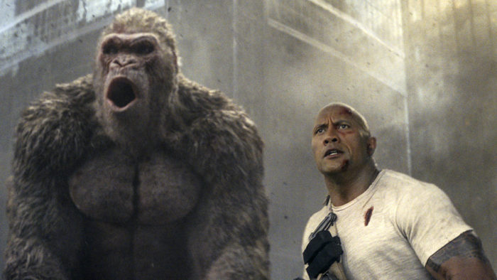
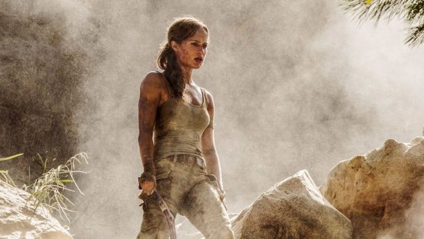
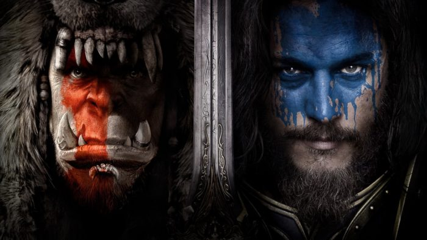
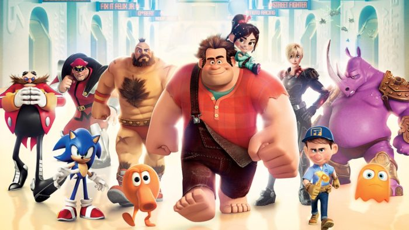
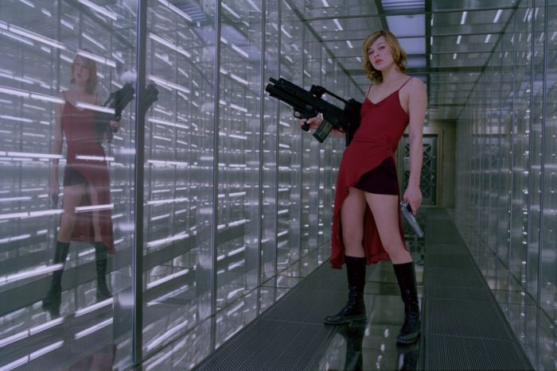

Las mejores adaptaciones cinematográficas de videojuegos:
Lamentablemente, muchos de los videojuegos que se ha llevado al cine no han supuesto un gran logro artístico. Películas como Assassins Creed (2016) de Justin Kurzel, Street Fighter (1994) de Steven E. de Souza, Super Mario Bros (1993) de Annabel Jankel y Rocky Morton, Doom (2005) de Andrzej Bartkowiak, DOA: Dead Or Alive (2006) de Corey Yuen, Double Dragon (1994) de James Yukich o Tekken (2010) de Dwight H. Little, no han logrado un nivel similar en su versión cinematográfica. Tampoco las películas de Uwe Boll han ayudado: En el nombre del rey (2007), Alone in the Dark (2005) o House of the Dead (2003) son ejemplos de ello. Sin embargo, sí que hay un buen puñado de películas que resultan muy interesantes. A continuación, os señalamos las que consideramos son las mejores adaptaciones cinematográficas de videojuegos:
-

Proyecto Rampage(2018) de Brad Peyton
-

Tomb Raider (2018) de Roar Uthaug
-

Sword Art Online the Movie: Ordinal Scale (2017) de Tomohiko Ito
-

Warcraft: El Origen (2016) de Duncan Jones
-

¡Rompe Ralph! (2012) de Rich Moore
-

Prince of Persia: Las arenas del tiempo (2010) de Mike Newell
-

Silent Hill (2006) de Christophe Gans
-

Resident Evil (2002) de Paul W.S. Anderson
-

Final Fantasy: La Fuerza Interior (2001) de Hironobu Sakaguchi y Motonori Sakakibara